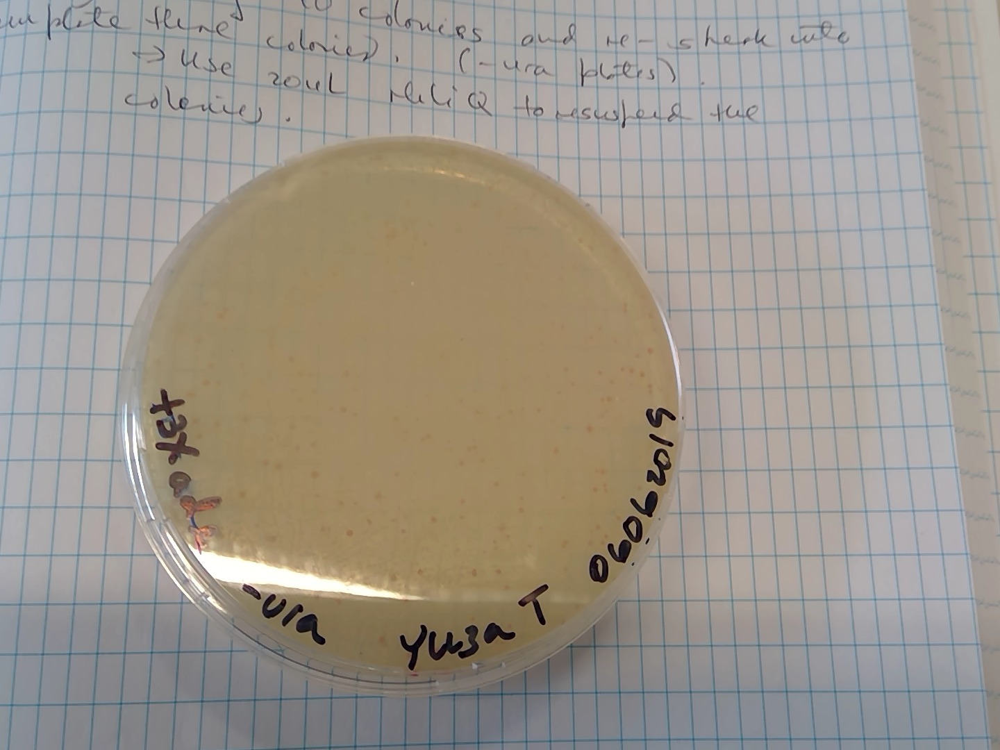
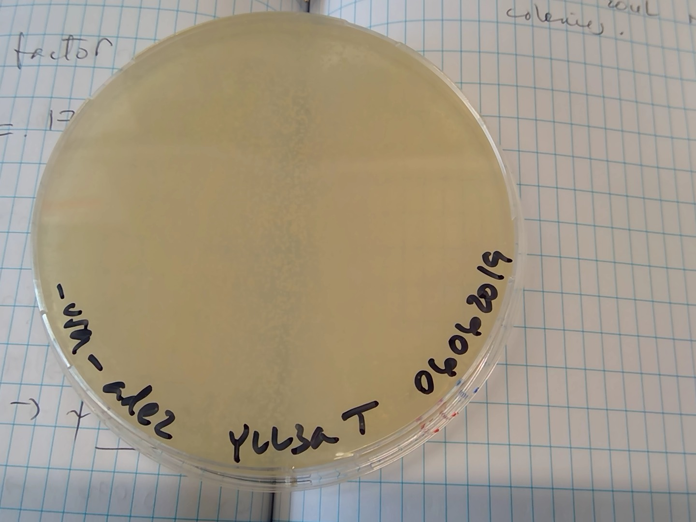
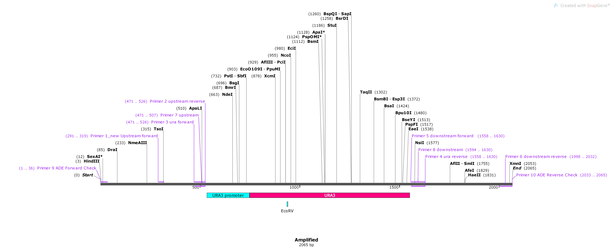
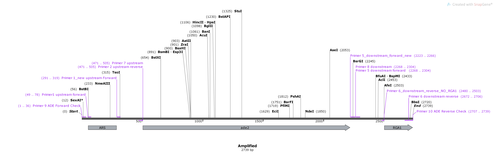
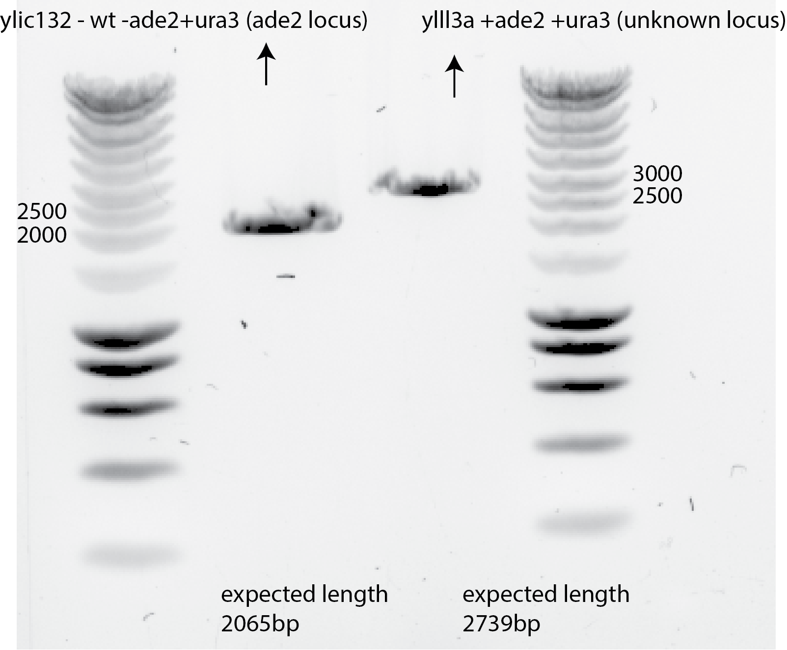

3. Title: 06062019-Yeast transformation with the OEP1 :)¶
3.1. Date¶
06062019
3.2. Objective¶
To remove the ade2 gene from yll3a and insert the URA+ promoter in its locus.
3.3. Method¶
Yeast transformation protocol
3.3.1. Homology arms:¶
left homology arm: 236 bp
PCR of primer_1_new_upstream_forward and primer_2_upstream_reverse
right homology arm: 272 bp
PCR of primer_5_downstream_forward and primer_6_new_downstream_reverse_NO_Rga1
3.3.2. DNA concentration¶
8ul of 803 ng/ul OEP1 = 6.4 ug
3.3.3. Selection plates¶
-URA + 3x ADE
-URA
YPD
3.4. Results¶
Growth of pink colonies in -ura+3x ADE plates :-)

No Growth of pink colonies in -ura plates 🤔 
3.5. Genomic Prep¶
3.5.1. Expected size of the insert in PCR: 2065 bp¶

3.5.2. Expected size if the insert is NOT in the ade2 location: 2739bp¶

3.5.3. Results 😀😀😀¶

3.6. Conclusion¶
To see the adenine deletion phenotype, namely, see pink colonies upon adenine depravation, in a transformations is necessary to supplement the transformation plate with extra adenine aminoacid. I did 2x more adenine than what the normal drop-out has.
The usual concentration in CSM is 10mg/l
I prepare a 50mL stock of 10mg/ml (1000x concentrated), and add 40ul for 20ml -URA plates (2x), which sum to 3x (2x+1x) the normal adenine concentration in a drop out plate.